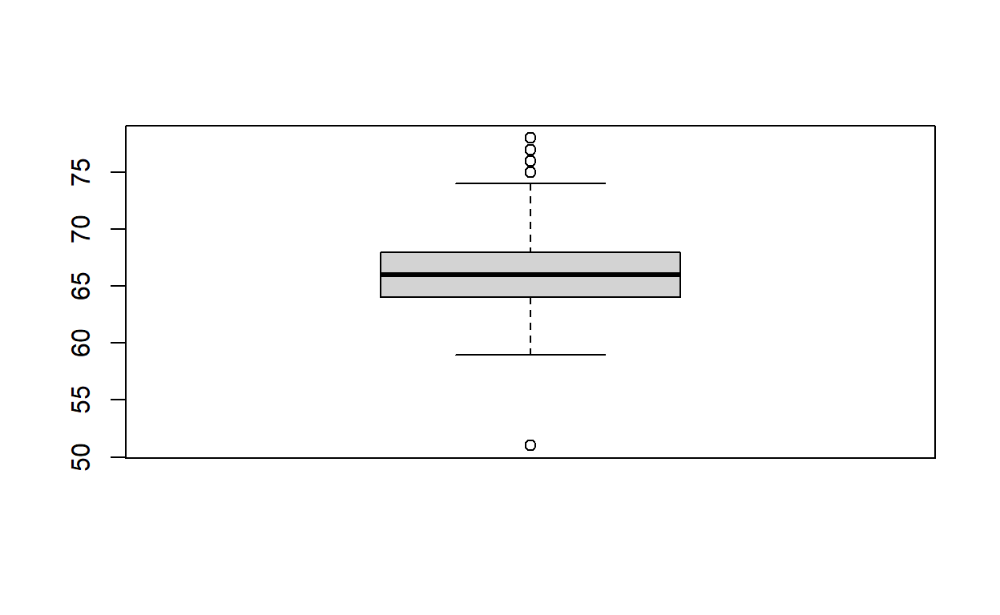
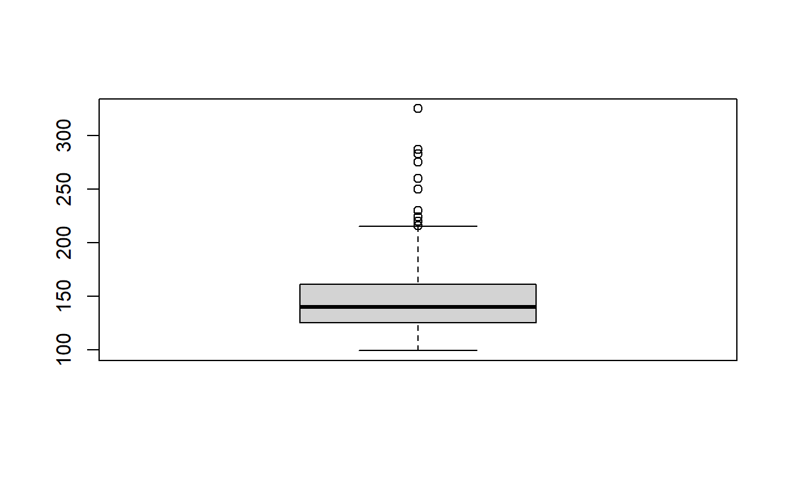
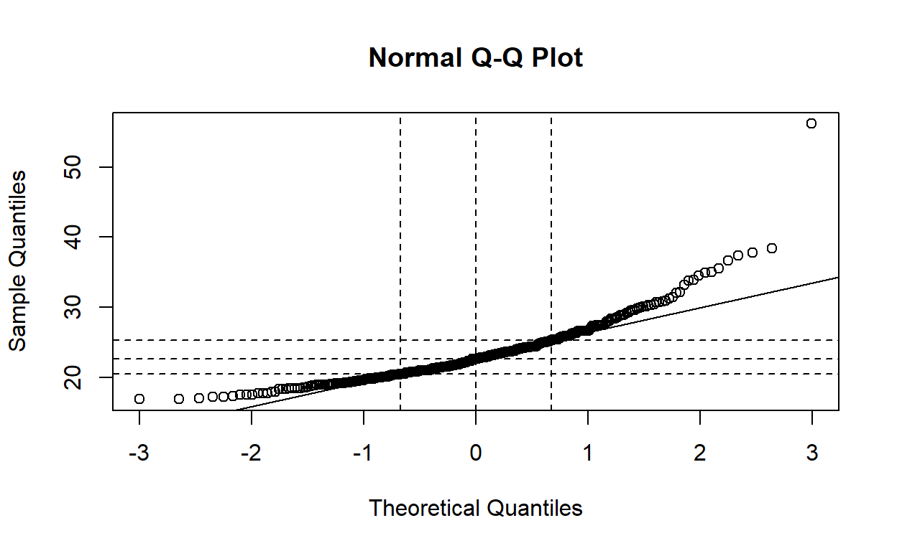
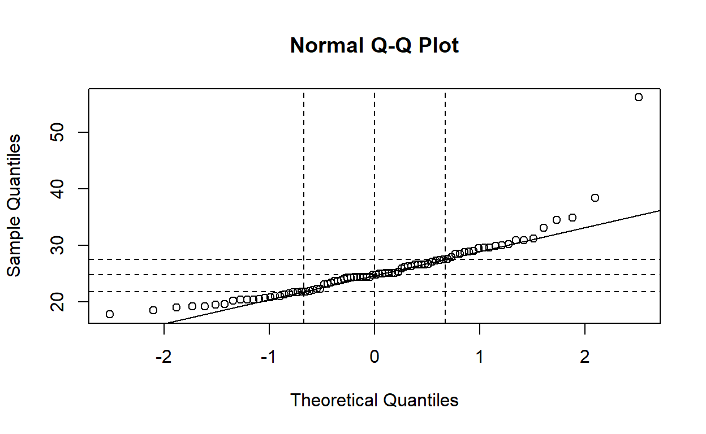
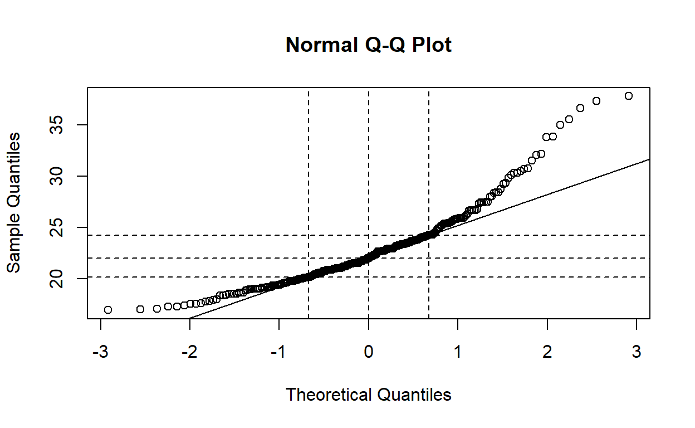

My Solution for 140.621 Problem Set 3
csv data file named 2019class621.csv. Refer to your Class Dataset Code Book for the file format. Load the tidyverse with: library(tidyverse) Open the data set and name it class621 (remember, you can’t start an object with a number!) And, don’t forget to open a script file in order to save your work. Use weight in pounds and height in inches to calculate BMI for all persons in the class. Recall that there may be misreported values of height or weight in this data set that could affect the calculation of BMI. Explore the dataset for unusual values, decide how to handle them, implement your decision, and explain what you did and why in a sentence or two.# Import dataset
class621 <- read_csv("./data/2019class6211.csv")
# Boxplot for height and weight
boxplot(class621$height)

boxplot(class621$weight)

Observations with height less than 55 inches or weight more than 300 pounds were dropped from the dataset. According to the boxplot of the height values, though several outliers have been found more than the upper fence, they seem to be close to each other on the distribution, and also within possible range according to normal sense; however, the outlier identified less than the lower fence independently distributed far away at the lower tail, and also not likely to be within the possible range according to normal sense — thus, threshold for height is setted as higher than 55 inches. Similarly, no outlier was identified less than the lower fence for weight, while for outliers identified more than the upper fence, all outliers seem to be close to each other on the distribution and also within possible range according to normal sense, except for the highest (extreme) value — thus, threshold for weight is setted as more than 300 pounds.
class.sex <- list()
for(sexmf in c(1, 2)) {
# Print subgroup info for for loop output
print(ifelse(sexmf == 1, "# Result for Male Subgroup", "# Result for Female Subgroup"))
# Filter observations and summary statistics
class.sex[[sexmf]] <- class621 %>%
filter(sex == sexmf)
print(stem(class.sex[[sexmf]]$bmi))
print(class.sex[[sexmf]] %>%
summarise(mean.bmi = mean(bmi, na.rm = TRUE),
sd.bmi = sd(bmi, na.rm = TRUE)))
}
[1] "# Result for Male Subgroup"
The decimal point is 1 digit(s) to the right of the |
1 | 88999
2 | 000000111111122222222333444444444444
2 | 555555555666677777777888999999
3 | 000001113
3 | 558
4 |
4 |
5 |
5 | 6
NULL
# A tibble: 1 x 2
mean.bmi sd.bmi
<dbl> <dbl>
1 25.5 5.28
[1] "# Result for Female Subgroup"
The decimal point is at the |
16 | 9
17 | 01334556889
18 | 033455556668999
19 | 000001112222333344455566788888889
20 | 00000011122223344445566667778888889999
21 | 0000000011222233334555555555556777888888
22 | 000122223344566667777788999999999
23 | 012222333333345555567777778889
24 | 0011112223333445799
25 | 02234444456678899999
26 | 124677778
27 | 345555
28 | 004448
29 | 238
30 | 133578
31 | 5
32 | 12
33 | 89
34 |
35 | 06
36 | 7
37 | 48
NULL
# A tibble: 1 x 2
mean.bmi sd.bmi
<dbl> <dbl>
1 22.8 3.73
Interval include the middle half of individuals under the normal assumption
- Male subgroup: Since \(P(Z>0.6745)=0.25\), the interval would be [21.90, 29.02] under the following calculation
\[ -0.6745 < \frac{X - 25.46}{5.28} < 0.6745 \]
\[ 21.90 < X < 29.02 \]
- Female subgroup: Similarly, since \(P(Z>0.6745)=0.25\), the interval would be [20.24, 25.28] under the following calculation
\[ -0.6745 < \frac{X - 22.76}{3.73} < 0.6745 \]
\[ 20.24 < X < 25.28 \]
Interval include the middle 95% of the individuals for a normal distribution
- Male subgroup: Since \(P(Z>1.96)=0.025\), the interval would be [15.11, 35.80] under the following calculation
\[ - 1.96 < \frac{X - 25.46}{5.28} < 1.96 \]
\[ 15.11 < X < 35.80 \]
- Female subgroup: Similarly, since \(P(Z>1.96)=0.025\), the interval would be [15.45, 30.07] under the following calculation
\[ - 1.96 < \frac{X - 22.76}{3.73} < 1.96 \]
\[ 15.45 < X < 30.07 \]
The results can be varified by the following code:
[1] 21.89869 29.02131[1] 20.24415 25.27585[1] 15.11139 35.80861[1] 15.44933 30.07067for(sexmf in c(1, 2)) {
# Print subgroup info for for loop output
print(ifelse(sexmf == 1, "# Result for Male Subgroup", "# Result for Female Subgroup"))
# Filter observations and summary statistics
print(quantile(class.sex[[sexmf]]$bmi,
c(.005, .025, .25, .75, .975, .995),
na.rm = TRUE))
}
[1] "# Result for Male Subgroup"
0.5% 2.5% 25% 75% 97.5% 99.5%
18.08349 18.99274 21.78709 27.54227 34.90693 48.80555
[1] "# Result for Female Subgroup"
0.5% 2.5% 25% 75% 97.5% 99.5%
17.01424 17.54282 20.15912 24.24067 32.22663 37.07590
Interval include the middle half of individuals under the normal assumption
- For both male and female subgroups, the lower bound of the interval upon normal assumption is slightly higher than the empirical interval, while the upper bound of the interval upon normal assumption is higher than the empirical interval.
Interval include the middle 95% of the individuals for a normal distribution
For male subgroup, the lower bound of the interval upon normal assumption is lower than the empirical interval, while the upper bound of the interval upon normal assumption is higher than the empirical interval.
For female subgroup, both the lower bound and higher bound of the interval upon normal assumption is lower than the empirical interval.
Compared to the normal distribution with same mean and standard deviation, the distribution of both male subgroup and female subgroup is right-skewed. The distribution of male subgroup also has a fatter tail on both sides compared to the normal distribution, and the distribution of female subgroup has a fatter tail on left side compared to the normal distribution.
for(sexmf in c(1, 2)) {
# Print subgroup info for for loop output
print(ifelse(sexmf == 1, "# Result for Male Subgroup", "# Result for Female Subgroup"))
# Normal assumption
print("## Under normal assumption")
print(paste("### Probability of BMI < 25: ",
pnorm(25, mean = mean(class.sex[[sexmf]]$bmi), sd = sd(class.sex[[sexmf]]$bmi)),
sep = ""))
print(paste("### Probability of BMI between 25-29.9: ",
pnorm(29.9, mean = mean(class.sex[[sexmf]]$bmi), sd = sd(class.sex[[sexmf]]$bmi)) -
pnorm(25, mean = mean(class.sex[[sexmf]]$bmi), sd = sd(class.sex[[sexmf]]$bmi)),
sep = ""))
print(paste("### Probability of BMI >= 30: ",
1 - pnorm(30, mean = mean(class.sex[[sexmf]]$bmi), sd = sd(class.sex[[sexmf]]$bmi)),
sep = ""))
# Actual sample value
print("## Actual sample value")
print(paste("### Probability of BMI < 25: ",
nrow(filter(class.sex[[sexmf]], bmi < 25)) / nrow(class.sex[[sexmf]]),
sep = ""))
print(paste("### Probability of BMI between 25-29.9: ",
nrow(filter(class.sex[[sexmf]], 25 <= bmi & bmi <= 29.9)) / nrow(class.sex[[sexmf]]),
sep = ""))
print(paste("### Probability of BMI >= 30: ",
nrow(filter(class.sex[[sexmf]], bmi >= 30)) / nrow(class.sex[[sexmf]]),
sep = ""))
}
[1] "# Result for Male Subgroup"
[1] "## Under normal assumption"
[1] "### Probability of BMI < 25: 0.465353364809384"
[1] "### Probability of BMI between 25-29.9: 0.334508912956873"
[1] "### Probability of BMI >= 30: 0.194875251835184"
[1] "## Actual sample value"
[1] "### Probability of BMI < 25: 0.511904761904762"
[1] "### Probability of BMI between 25-29.9: 0.369047619047619"
[1] "### Probability of BMI >= 30: 0.119047619047619"
[1] "# Result for Female Subgroup"
[1] "## Under normal assumption"
[1] "### Probability of BMI < 25: 0.725914635659661"
[1] "### Probability of BMI between 25-29.9: 0.246289734552271"
[1] "### Probability of BMI >= 30: 0.0261269029218221"
[1] "## Actual sample value"
[1] "### Probability of BMI < 25: 0.785714285714286"
[1] "### Probability of BMI between 25-29.9: 0.157142857142857"
[1] "### Probability of BMI >= 30: 0.0571428571428571"| Probability | Model based results | Actual sample values | |
|---|---|---|---|
| Male | BMI < 25 | 0.4654 | 0.5119 |
| Male | BMI between 25-29.9 | 0.3345 | 0.3690 |
| Male | BMI >= 30 | 0.1949 | 0.1190 |
| Female | BMI < 25 | 0.7259 | 0.7857 |
| Female | BMI between 25-29.9 | 0.2463 | 0.1571 |
| Female | BMI >= 30 | 0.0261 | 0.0571 |
qqnorm(class621$bmi)
qqline(class621$bmi)
#Adding gridlines at median and Q1/Q3
abline(h=quantile(class621$bmi, c(.25,.5,.75), na.rm=TRUE), lty=2)
abline(v=qnorm(c(.25,.5,.75)), lty=2)

The median of bmi is approximately 23, while the 1st and 3rd quartile of bmi is approximately 20.5 and 25.5, respectively. Relative to a Gaussian (normal) distribution, the shape of the BMI distribution is right-skewed.
for(sexmf in c(1, 2)) {
# Print subgroup info for for loop output
print(ifelse(sexmf == 1, "# Result for Male Subgroup", "# Result for Female Subgroup"))
qqnorm(class.sex[[sexmf]]$bmi); qqline(class.sex[[sexmf]]$bmi)
abline(h=quantile(class.sex[[sexmf]]$bmi, c(.25,.5,.75), na.rm=TRUE), lty=2)
abline(v=qnorm(c(.25,.5,.75)), lty=2)
}
[1] "# Result for Male Subgroup"
[1] "# Result for Female Subgroup"
For both male and female subgroup, the middle 50% of observations seem to line up with the expected values from a normal distribution, while the quartiles in both tails are higher than that of the expected values, with more outliers in the right tail, indicating the distribution of both male and female subgroup is right-skewed.
Compared to female (x-axis), for all possible quartiles, the values of bmi are all higher in male subgroup compared with female subgroup, indicating that males tend to have a higher bmi compared to females.
Getting started: Go to the following web site: http://onlinestatbook.com/stat_sim/sampling_dist/index.html You will use the applet to generate random numbers from a true population distribution, here the uniform distribution on the interval (0, 33) When the page comes up, wait for the “Begin” button to appear. Click “Begin” to open the site. When the site (“applet”) opens, notice that there are 4 sections with graphs labeled “Parent Population”, “Sample Data”, “Distribution of Means” and a fourth graph that is not labeled. Click on the menu at the upper right (“Normal”) in the first section, and select “Uniform.” Notice how the shape of the graph labeled “Parent Population” changes. Below, where it says “N=5” (under “Mean”), click the menu and change the selection to “N=2.”Now you are ready to do the next step ii.
Means of samples of size n=2: In the second panel, on the right side click “100,000.” This will generate 100,000 samples (simulating all possible samples) of two random waiting times (n=2). The third graph labeled “Distribution of Means,” will then form a histogram of the mean values from those samples. Describe the shape of the histogram of means recorded by the applet in the third graph. Record and report the mean and standard deviation of the distribution of means for n=2 in the table in part v.
The shape of the histogram of means is a bell-shaped approximately normal distribution with a mean of 16.04, median of 16.00, and standard deviation of 6.75.
The shape of the histogram of means is a bell-shaped approximately normal distribution, which tail is relatively fatter compared with ii., with a mean of 16.02, median of 16.00, and standard deviation of 4.26.
Once more, describe the shape of the distribution of means given by the applet. Record and report the mean and standard deviation of the distribution of means for n=25 in the table in part v below.
The shape of the histogram of means is a bell-shaped approximately normal distribution, which tail is relatively fatter compared with iii., with a mean of 16.00, median of 16.00, and standard deviation of 1.91.
| Sample Size | Observed Statistics for 100,000 Replicates | Theoretical Values for Infinite Replicates | ||
|---|---|---|---|---|
| (n) | Mean | Standard Deviation | Mean | Standard Deviation |
| 2 | 16.04 | 6.75 | 16.00 | 6.71 |
| 5 | 16.02 | 4.26 | 16.00 | 4.24 |
| 25 | 16.00 | 1.91 | 16.00 | 1.90 |
| 100 | NA | NA | 16.00 | 0.95 |
With sample size larger, the sample means tend to be more close to the true population mean. The deviation of the sample mean depends on the population variance and sample size, i.e., with population variance lower, the deviation of the sample means tend to be lower; and, with sample size larger, the deviation of the sample means tend to be lower. The Central Limit Theorem in my own words is, even though the population distribution may not be normal, given the sample size is large, the mean of the sample means will still equal to the true population mean, and the variance of the sample means will still equall to the population variance devided by the sample size, and the distribution of sample means will still approximate to normal distribution.